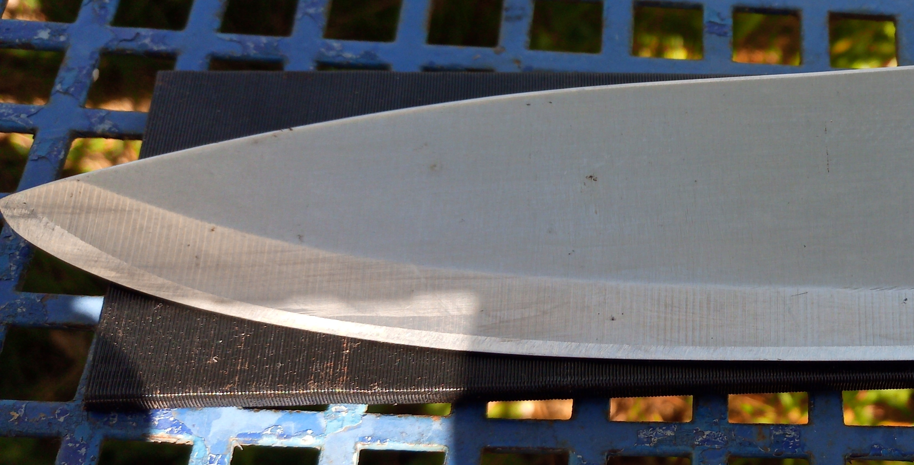

Profesionální broušení ve Ondřejově a okolí
Jsem František Šubrt, řemeslník působící v oblasti Ondřejova, Senohrab, Mnichovic, Benešova a Říčan. Specializuji se na profesionální broušení veškerého ostřího nářadí pro domácnosti, řemeslníky, řezníky i firmy v celém regionu.
🚗 Mobilní služby
Broušení přímo u vás doma, v dílně, řeznictví nebo provozovně. Dojíždím do celého regionu.
⚡ Rychlé provedení
Většinu zakázek vyřídím do 24 hodin. Nouzové broušení možno i ve stejný den.
🛠️ Odborné vybavení
Používám profesionální brusné stroje a nástroje pro dokonalé výsledky.
💯 Záruka kvality
Na veškeré práce poskytuji záruku. Spokojenost zákazníků je prioritou.
🔪 Broušení nožů v Ondřejově a okolí
Nabízím broušení všech typů nožů:
- Kuchyňské nože - od malých nožů na ovoce po velké kuchařské nože
- Zahradní nože - nůžky, srpy, kosy, křovinořezy
- Řemesemeslnické nože - dláta, řezbářské nože, skládací nože
- Speciální nože - lovecké nože, rybářské nože, sběratelské kusy
💵 Cena broušení nožů
Cena se odvíjí od stavu nože a typu broušení. Základní broušení tupého nože začíná již od 50 Kč/kus. Za komplexní broušení s úpravou geometrie čepele účtuji 100--200 Kč dle náročnosti.
Poškozené nože (zlomené hroty, poškozené ostří) vyžadují individuální cenovou kalkulaci.
🔄 Broušení vrtáků v regionu Praha-východ
Specializuji se také na broušení vrtáků všech typů a velikostí:
- Kovové vrtáky - HSS, kobaltové, pobeditové
- Vrtáky do dřeva - Forstnerovy, perkové, šnekové
- Univerzální vrtáky - pro kov, dřevo, plast
- Speciální vrtáky - pro beton, sklo, keramiku
💵 Cena broušení vrtáků
Broušení standardního vrtáku (do 10mm): od 30 Kč/kus
Broušení větších vrtáků (nad 10mm): od 50 Kč/kus
Oprava poškozených vrtáků: individuální cena dle rozsahu poškození
Při větším množství vrtáků poskytuji množstevní slevy.
🪓 Broušení řetězů motorových pil
Odborné broušení a údržba řetězů motorových pil pro bezpečnou a efektivní práci. Špatně nabroušený řetěz zvyšuje riziko zpětného rázu a zbytečně namáhá motor.
- Broušení všech typů řetězů - .325", 3/8", 404" atd.
- Úprava úhlu broušení dle typu řezání (podélné, příčné) <
- Kontrola a seřízení rozteče vodících zubů (depth gauge)
- Oprava poškozených článků - vyměním poškozené články řetězu
- Kompletní servis řetězu - broušení, čištění, mazání
💵 Cena broušení řetězů motorových pil
Standardní broušení řetězu (do 40 cm): od 150 Kč
Broušení delšího řetězu (40-70 cm): od 200 Kč
Profesionální řetězy (nad 70 cm): od 250 Kč
Kompletní servis (broušení + seřízení): od 200 Kč
Cena zahrnuje kontrolu všech článků a vodících zubů.
🥩 Broušení struhadel a nožů mlýnků na maso - služby pro řezníky
Specializované služby pro řezníky, masny a potravinářské provozy. Ostrost nástrojů je klíčová pro kvalitu produktu a produktivitu práce.
Broušení struhadel a hoblíků:
- Ruční struhadla - na zeleninu, sýr, ořechy
- Strojové hoblovací nože - pro krájení šunky, salámů
- Nože na krájení masa - cirkulární nože, gilotiny
- Úprava ostří na přesný úhel pro čistý řez
Broušení nožů mlýnků na maso:
- Nože mlýnků všech typů - domácích i průmyslových
Mlecí desky (plotny) - broušení otvorů pro správnou velikost mletí - Kompletní seřízení - vůle mezi nožem a deskou
- Oprava poškozených nožů - výměna nebo renovace ostří
💵 Cena broušení řeznického nářadí
Broušení struhadla: od 100 Kč/kus
Broušení nože mlýnku na maso: od 200 Kč/kus
Broušení mlecí desky (plotny): od 150 Kč/kus
Kompletní servis mlýnku (nůž + deska + + seřízení): od 300 Kč/sada
Množstevní slevy pro řeznictví - při pravidelném servisu
Pro firmy nabízím výhodné servisní smlouvy s pravidelnými návštěvami.
Techniky broušení
Používám kombinaci moderních a tradičních technik:
- Strojové broušení - pro přesnost a konzistenci
- Ruční broušení - pro speciální nože a jemné úpravy
- Diamantové broušení - pro tvrdé materiály a keramické nože
- Mokré broušení - pro ochranu ostří před přehřátím
- Specializované stroje - pro řetězy pil a řeznické nože
Mobilní broušení přímo u vás
Jako jediný v regionu nabízím mobilní služby broušení přímo u zákazníka. Přijedu k vám domů, do dílny, řeznictví nebo firmy s veškerým potřebným vybavením.
Výhody mobilního broušení:
- Ušetříte čas - nemusíte nikam jezdit
- Okamžité vyřízení - vidíteíte práci na vlastní oči
- Konzultace na místě - můžeme probrat optimální úhel broušení
- Vhodné pro firmy - minimální prostoje v provozu
- Servis těžkého nářadí - nemusíte demontovat stroje
📞 Kontakt pro profesionální broušení
Potřebujete nabrousit nože, vrtáky, řetězy pil nebo řeznické nářadí v Ondřejově, Senohrabech, Mnichovicích, Benešově nebo Říčanech?
Telefon: +420 604 590 261
Email: fandasubrt@seznam.cz
Působnost: Ondřejov, Senohraby, Mnichovice, Benešov, Říčany a okolí do 30 km
Dostupnost: Po-Pá 8:00-18:00, So 8:00-14:00, možno i po domluvě
Speciální služba: Pro řeznictví a firmy nabízím noční a víkendové termíny.
Neváhejte mě kontaktovat pro nezávaznou cenovou kalkulaci nebo konzultaci.
Příklady mé práce


Často kladené dotazy
Jak dlouho trvá broušení nože?
Standardní broušení jednoho nože trvá 10-20 minut. Složitější úkony (oprava poškození) mohou trvat i 30-60 minut.
Do jakých obcí dojíždíte?
Do všech obcí v okruhu cca 30 km od Ondřejova. Nejčastěji: Ondřejov, Senohraby, Mnichovice, Benešov, Říčany, Mirošovice, Strančice, Hrusice, Turkovice, Poříčí nad Sázavou, Chocerady.
Brousíte i keramické nože?
Ano, brousím i keramické nože pomocí speciálních diamantových brusných kotoučů.
Jak často mám brousit řetěz motorové pily?
Při běžném používání v domácích podmínkách je řetěz potřeba strojně nabrousit, když je **znatelně tupý** – pila se "zasekává", vytváří jemný pilinový prach místo třísek nebo vyžaduje přílišný tlak při řezání. K tomu může dojít po několika hodinách práce v čistém dřevě.
Okamžitě je broušení nutné, pokud řetěz **zavadí o zem, kámen, hřebík nebo jiný tvrdý předmět** – i jeden kontakt může ostří poškodit. Profesionálové kontrolují a přebrušují (často ručně pilníkem) ostří průběžně, aby udrželi maximální výkon.
Pravidelná údržba pilníkem mezi strojními broušeními prodlužuje životnost řetězu a zajišťuje bezpečnou práci.
Nabízíte servisní smlouvy pro řeznictví?
Ano, pro řezníky a masny nabízím výhodné servisní smlouvy s pravidelnými měsíčními nebo čtvrtletními návštěvami. Kontaktujte mě pro individuální nabídku.
Můžete přijet brousit přímo do naší provozovny?
Ano, mobilní broušení přímo ve vašem řeznictví, dílně nebo firmě je moje specialita. Přivezu veškeré potřebné vybavení.